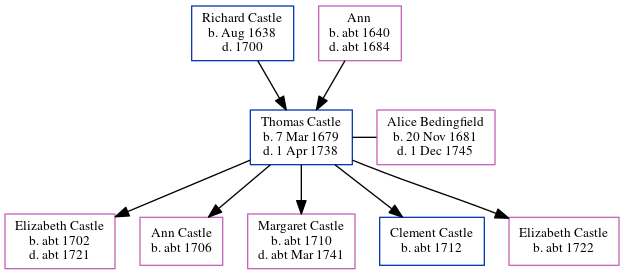

Thomas Castle 1679 - 1738
[ Home ] | [ Calendar ] | [ Surnames Index ] | [ Census Index ] | [ Family History ]The child of Richard Castle and Ann, Thomas Castle, the 7 times great-grandfather of Nigel Horne, was born in Margate, Kent, England on Mar 7, 1679, was baptized there on Jun 22, 1679 and also married Alice Bedingfield (with whom he had 5 children: Elizabeth, Ann, Margaret, Clement and Elizabeth) there at St. John the Baptist Church on Sep 14, 17011.
He died on Apr 1, 1738 in Margate and was buried there at St John the Baptist Church in 1738 (Two Thomas Castles were buried, one on 05 Apr 1738 one on 08 Dec 1739. KFHS CD28. Very unsure about this - may remove it.).
Parents
- Richard was born in Aug 1638
- Ann was born c. 1640
Children
- Elizabeth was born c. 1702
- Ann was born c. 1706
- Margaret was born c. 1710
- Clement was born c. 1712
- Elizabeth was born c. 1722
Citations
- Kent, England, Tyler Index to Parish Registers, 1538-1874 Online publication - Provo, UT, USA: Ancestry.com Operations, Inc., 2010. This collection was indexed by Ancestry World Archives Project contributors.Original data - Frank Watt Tyler. The Tyler Collection. Canterbury, Kent, England: The Institute of Herald
Media
Canterbury Marriages Transcription - GBPRS-CANT-M-97110716-2
Family Tree
Generated by ged2site. Last updated on Jun 11, 2024